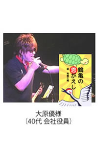

| KindleとKDPの話～ユーザーと著者にとってのメリットとは？～: はじめての方でもよくわかる！電子出版するためのティップス集その２（簡易読みきり版） 【はじめての電子書籍出版ティップス集】 | |
| 川口 浩治 | |
| BESTPAGE (2014) | |
本書の内容について
本書の内容は、電子書籍や電子書籍の市場、Ｋｉｎｄｌｅ本の特徴やＫＤＰシステムの利用方法、本の企画の立て方や文章制作方法、そして、電子出版・販売のノウハウなど、電子書籍出版に関する基本的な内容をまとめさせていただきました。
そのため、既にＫｉｎｄｌｅ書籍をご出版されている方には、知っている情報も多く含まれるかと思われますので、予め、ご了承の程、何卒よろしくお願い致します。ただ、これから出版をされたい方や電子書籍初心者の方にとっては、為になる情報や役に立つ情報もあるかと思います。
また、本書は気軽に読んでいただけるように、文量は１０，０００文字以内となっております。
少しでも本書の内容が、読者様のお役に立てれば非常に嬉しく思います。
※シリーズ本のご紹介（一部）
- 『Ｋｉｎｄｌｅ出版ってどうなの？～アマゾンキンドルの魅力～』～はじめての電子書籍出版ティップス集その１～
- 『ＫｉｎｄｌｅとＫＤＰの話～ユーザーと著者にとってのメリットとは？～』～はじめての電子書籍出版ティップス集その２～
- 『紙の本と電子書籍の違い～基本フォーマットとこれからの出版ビジネスについて～』～はじめての電子書籍出版ティップス集その３～
・・・など。
※その他、多数出版
～はじめての電子書籍出版ティップス集その２～
ＫｉｎｄｌｅとＫＤＰの話～ユーザーと著者にとってのメリットとは？～
※簡易読みきり版
圧倒的なブランド力を持つアマゾン
米国の書籍最大手のアマゾン社。ご存じのとおり、もはや、書籍だけの販売だけでなく、家電や家具、その他さまざまなものがアマゾンを使えば簡単に手に入ります。しかも、家まで届けてくれるサービスは圧巻ですね。そのため、一度、アマゾンのサービスを使ってしまうと、その便利さゆえに、アマゾンから離れることができなくなります。※ちなみに、２０１２年度時点で、月間４８００万人以上のユーザーが訪れるオンラインストアとなっています。
そして、その世界最大の量販ビジネスを展開しているアマゾンが開発した電子リーダー端末が、Ｋｉｎｄｌｅです。
Ｋｉｎｄｌｅも電子書籍リーダーとしては、素晴らしい端末です。もはや、単なる電子書籍を読み端末だけでなく、インターネットを無料でアクセスできたり、ゲームを楽しめたりする万能な端末へと進化しました。（Ｋｉｎｄｌｅ端末には、読書に特化したＰａｐｅｒＷｈｉｔｅやメールやＷＥＢが見れるＦｉｒｅシリーズなどがあります。）
通常は、モバイル端末をネットに接続し、コンテンツをダウンロードしようとすると、通信料が課金されますが、Ｋｉｎｄｌｅ（３Ｇ）の場合は、通信料をアマゾンが負担してくれるので、ネットの利用が原則的に無料です。
今後もアマゾンは、出版業界だけでなく、一般消費者にもブランド拡大を続けていく巨大企業として活躍していくことになります。
ワイヤレスでシンクロするＫｉｎｄｌｅ
ご存知の方も多いと思いますが、Ｋｉｎｄｌｅ端末には、ＡｎｄｒｏｉｄやｉＰｈｏｎｅ、ｉＰａｄなどのスマホやタブレットとシンクロ（同期）する機能があります。
これは、どういうことかと言うと、一度購入したＫｉｎｄｌｅ書籍は、別々の端末でも情報を共有できるということです。
たとえば、読みかけの本のしおり機能や、読書メモといった履歴機能も、Ｋｉｎｄｌｅ本体やｉＰａｄなどの端末、Ａｎｄｒｏｉｄなどのスマートフォンと同期できます。あるいは、文章にハイライトを引いたり、書き込んでいたメモ書きした記録、ブックマークや変更したリーダーの設定内容を常にデバイスの間で同期することができるのです。
例えば、メモ書きの同期方法は次のような手順になります。
- Ｋｉｎｄｌｅにメモを書き込む
- 『ライブラリ』に戻ると、メモの記録がクラウド上に転送される
- 他の電子端末で開くと、メモ書きがダウンロードされ、そのまま反映される
※自分のメモした内容を後から見ることで、自分にとって大切だと思ったポイントや、興味があったことを思い出せるので、読書をするときに、メモをする方にとっては、非常に利用価値のある機能のひとつだと思います。
※ちなみに、これらの情報は、kindle.amazon.co.jpというサイトで全て管理されています。
kindle.amazon.co.jpはこちら
※kindle.amazon.co.jpへは、普段使っているアマゾンIDでログインできます。
読んでいた続きがそのまま別の端末にも反映される
また、自宅でキンドルを使って読書をして、朝と帰りの通勤時間では、スマートフォンを使って、読書の続きする。といったことも可能になります。つまり、ある端末で『最後に読んでいたページ』から、別端末でも読み続けることができるということです。
同期機能が無かったら、わざわざ最初のページからページをめくって、自分が読んでいたページを探さないといけなくなり、読んでいたページ数を覚えていなかったり、ページをめくる作業が面倒だったりします。これは、ちょっとした機能ですが、ユーザーの利便性をよく考えられて作られていると思います。
また、このような情報共有も、ワイヤレスでインターネット回線を介して自動的に共有してくれます。これまで、紙の書籍になれている方にとっては、一度使ったら止められない快適な読書体験になるかもしれません。
Ｋｉｎｄｌｅ端末が無くても電子書籍を楽しめる
Ｋｉｎｄｌｅ本をこれまで読んだことが無い方、もしくは、電子書籍に詳しくない方の中には、Ｋｉｎｄｌｅ本を読むには、専門の端末が必要だと思っている方が多くいらっしゃいます。
または、Ｋｉｎｄｌｅはほしいけど、もう既にｉＰａｄを持っているし、タブレットをこれ以上多く持ちたくないという方もいらっしゃいます。
Ｋｉｎｄｌｅでは、そんな方のために、Ｋｉｎｄｌｅ端末が無くても、ｉＰａｄなどのタブレット、もしくは、ｉＰｈｏｎｅやＡｎｄｏｒｏｉｄなどのスマートフォン端末でも読めるようになっています。
つまり、わざわざ専用のキンドル端末を購入しなくても、普段から持ち歩いてる、スマートフォンを利用することができるのです 。
Ａｍａｚｏｎでは、それぞれのデバイス用の無料アプリケーションを配信しているので、そちらをダウンロードして利用することができます。
▼Ａｍａｚｏｎの電子書籍用アプリ配信ページ
http://www.amazon.co.jp/gp/feature.html?ie=UTF8&docId=3077089376
Ｋｉｎｄｌｅ本体を持っていなくても、自分のｉＰｈｏｎｅやｉＰａｄ、あるいは、海外ではパソコンでも電子書籍を楽しむことができます。ちなみに、どの端末が対応しているかを確認するには、Ａｍａｚｏｎの販売ページに、対応可能な端末という部分があり、これで対応可能な端末が確認できます。もし、自分が購入したい書籍が、スマートフォンなどにも対応していれば、あなたは、いつでも、どこでも読書を楽しむことができるようになります。
電子書籍を楽しみたいけど、お金は極力使いたくないという方にとっては、ご自身のスマートフォンやタブレット端末を利用すれば、わざわざＫｉｎｄｌｅを購入する必要がありません。
このサービスのおかげで、Ｋｉｎｄｌｅ書籍を楽しめるユーザーが増加しています。とてもいいサービスであり、ますますＫｉｎｄｌｅを楽しめるユーザーが増える戦略でもあります。さすが、いろいろなサービスを考えてくれているアマゾン！っと言えますね。
Ｋｉｎｄｌｅ本を読んでみたいけど、専用端末を持っていないから読めないな。とあきらめている方がいれば、このことを教えてあげてください。無料アプリをダウンロードいただければ、すぐにＫｉｎｄｌｅ本が読めるようになります。
驚異的なアマゾンのユーザー数と投資額
すでに、アマゾンのサイトに訪れるユーザーは、月に約５０００万人を超えており、恐ろしいほどのユーザーを獲得しております 。Ｋｉｎｄｌｅ購入者の割合はまだまだこれからですが、これから１０年間に確実に伸びていくと思われます。
特に、アマゾンという企業は、インフラへの投資も惜しみません。
アマゾンは、多くの利益を得ているにもかかわず、それも大賀するほどの投資を毎年実施してサービス拡充に力を入れています。アマゾンの登場によって、多くの市場が形成され、それと同時にこれまでの古い概念の市場が破壊されています。
出版業界は、その最たるものですが、それ以外にも、家電製品を販売している家電量販店もアマゾンの登場により、非常に厳しい状況となっています。しかし、それでも拡大をし続けるには、やはり、ユーザーが「便利だから」、「安いから」などの理由でアマゾンを利用するからだと思います。
ユーザーの利便性を重視しているアマゾンに、これからも注目です。
買収に積極的なアマゾン
また、アマゾンはさまざまな企業を買収していることでも有名です。
たとえば、２０１３年３月時点では、書籍紹介サイトのGoodreadsという企業の買収を発表しています。
※ご参考
Ａｍａｚｏｎ．ｃｏｍは米国時間３月２８日、書籍紹介サイトのGoodreadsを買収することで合意したと発表した。買収金額は明らかにされていない。
Goodreadsの買収によってＡｍａｚｏｎは、読者にデジタルと現物の両方について、書籍を購入してもらえる新たな方法を獲得するはずだ。ＡｍａｚｏｎはまたGoodreadsを利用して、作家がこれ以外に知ってもらう機会がないであろう読者を獲得できるよう支援する計画だとも述べている。
参照：http://japan.cnet.com/news/business/35030136/
このようにアマゾンにとって意味のある買収を積極的におこなっているため、Ａｍａｚｏｎの書籍が一層強化されて、我々ユーザーにとっても恩恵がありそうです。また、アマゾンでは、このような電子書籍産業のサービス拡張以外でも、いろいろなサービス展開を多方向で考えています。
その他、面白いサービス
最近であれば、配達を空から３０分で実施してくれる という、『Ａｍａｚｏｎ Ｐｒｉｍｅ Ａｉｒ』というサービスもアメリカで話題になっています。これは、文字通り、配達を無人化して空から行ってくれるという未来型の宅配方法です。
「いやいや、そんなのウソでしょ？」と思う方もいるかもしれませんが、本当です。一戸建ての庭がある家庭が多いアメリカでは結構現実的なサービスだと思います。
ちなみに、こちらのサービスは、アメリカで２０１５年から開始予定のようです。このような革新的なサービス提供をしてくれるのがアマゾンです。どこまで日本でもサービス提供可能かは分かりませんが、今後もいろいろな面白そうなサービスが出てくると思います。
Ｋｉｎｄｌｅ対応コンテンツの爆発的増加
アマゾンは、今後も出版された紙の書籍を電子書籍化することを願っております。そのため、出版業界の大手はもとより、自費出版の１冊だけという個人に対しても、Ｋｉｎｄｌｅ対応の書籍を可能な限り増やしてくれるように求めております。
ビジネス的に考えても、日本の出版社は、これからのアマゾンの成長戦略にそっぽを向いて、紙の出版にだけ対応していることや、自前の電子書籍プラットフォームで対抗している場合ではありません。また、個人の方も、自分で出版できる時代になったのであれば、自らが持っているスキルや考えを、世の中に向けて発表していく活動もどんどんしていくべきだと思います。
Ａｍａｚｏｎ ＫＤＰの出現により、これまでの出版の概念をガラッと変えたと言えます。我々個人でも、膨大なユーザーを抱えるアマゾンに自書を出版し、販売できる機会ができました。すでに、欧米には、Ｋｉｎｄｌｅ出版をして成功している著者が数多くいます。
人にはいろいろな人生の転機がありますが、本を出版することも人生の転機につながる可能性が大いにあります。
自分のお店を持っている方、何かサービスを提供している経営者の方、現在はサラリーマンだけど、いつかは独立・起業をしたいと思っている方など、いつか出版したいと思っているさまざまな方に、電子書籍の出版は向いています。※もちろん、出版自体は簡単になりましたが、その内容やコンテンツが、"読者を満足させる必要がある" ということは変わりありませんが。
いまや、電子書籍を読まれる方も、Ｋｉｎｄｌｅ対応のコンテンツも爆発的に増加しています。これからもその数はどんどん伸びてくると思います。
Ｋｉｎｄｌｅのコンテンツは、１年で３倍以上になった
日本のＡｍａｚｏｎキンドルストア開設から１年間で、電子書籍数は、１４万冊以上存在し、電子コミックは５万冊以上になっているようです。
※ご参考
同時期の伸び率で見ればイギリスに肉薄しており、アメリカやドイツの勢いを上回るほどである。日本語書籍の品揃えも大幅に拡充されており、タイトル全体ではオープン時の５万から現在は１４万５,０００と約３倍に、うちコミックはオープン時の１万５０００から現在は５万３,０００と約３.５倍に増加している。
http://news.mynavi.jp/articles/2013/10/26/kindle/
たった１年間で、これだけのコンテンツが揃えられたことは本当にすごいことです。最近では、日本でのコミックの売上は、紙の書籍の売上も超えたと発表されているので、この市場がどんどん成長していることが分かります。
また、市場の成長に伴い、著者の活動の幅が広がったことは非常に嬉しいことですが、今後は競争も激化してくると思いますので、著者自身は、その対応も必要になってくるかと思います。
電子書籍のロイヤリティについて
通常、紙の本を出版しようと思うと印税は、６%～８%と言われています。つまり、たとえば、あなたが１５００円の本を出版して、頑張って販売しても、１冊あたりの収入は、たったの９０円から１２０円程度にしかなりません。
もちろん、ミリオンセラーなどが出せたら、入ってくる収入も上がりますが、今の時代、なかなかそういうことにはなりません。
一方、２０１２年の１０月に登場したＡｍａｚｏｎのＫｉｎｄｌｅストアの印税は、なんと最低でも３５％、最高で７０％ という非常に高くロイヤリティが設定されています。
ただ、７０％を選ぶ場合は、いろいろと条件がある（たとえば、７０％のロイヤリティを選択した場合は、他の電子書籍販売のプラットフォームでの販売が禁止されたり、Ｋｉｎｄｌｅで９０日間本を独占販売・レンタル可能にする「ＫＤＰセレクト」への登録が必須だったり、また、Ｋｉｎｄｌｅ版の希望小売価格を製本版より２０％以上下回るよう調整しなくてはならないといった条件があります。)
とは言え、それでも、最低３５％のロイヤリティは、いままでの出版業界ではありえない数字です。
ロイヤリティの高さも、電子書籍を出版する魅力の一つです。※出版のハードルが劇的に下がり、受け取れるロイヤリティが劇的に上昇しました。
これまで、本の出版はある意味非常に高いリスクを抱えていました。なぜなら、自費出版の場合は、数百万円の費用が必要になるわりに、実際に売れるかどうかは神のみぞ知る世界だったからです。
しかし、電子書籍であれば、かかる費用は数万円程度であり、しかも印税な紙の出版の５倍以上もあります。これからの時代は、一人一冊本を出すことが当たり前の世界になるかもしれません。
ＫＤＰ米国の源泉徴収の免除についてご案内（会社および個人以外の事業体向け）
ここからは、Ｋｉｎｄｌｅ本を出版された著者が必ずやっておきたい、"免税処理" についてご案内します。
現在、米国以外の居住者に対するロイヤリティの支払いに適用される標準的な源泉徴収税率は３０％となっております。そのため、ただ単に、ＫＤＰを利用して電子書籍を出版しただけでは、本のロイヤリティーが３０％も引かれてしまいますが、こちらの源泉徴収は、所定の手続きをすると、免除することができます 。
※ただし、こちらの申請は個人以外の事業体用となります。個人の申請に関しましては、ITIN（Individual Taxpayer Identification Number）をTIN番号としてご取得する必要がございます。※米国TIN（Taxpayer ID Number）の申請についてはこちら
▼以下、Ａｍａｚｏｎ ＫＤＰより一部抜粋
源泉徴収税は、支払いの総額に基づいて計算されます。
ただし、売上が発生した市場の通貨以外の通貨で
支払いを受け取る際に生じる費用については、計算に含めません。
米国以外（米国との租税条約を締結している国）に居住している出版者の場合、有効なＩＲＳフォームＷ８―ＢＥＮ（および必要なその他の書類）を当社に提出していれば、受け取るロイヤリティに対して適用される米国の源泉徴収税が軽減されます。
注: 日本居住者の場合、内国歳入庁 (ＩＲＳ) に適切な申請を行うと、源泉徴収は免除されます。
上記の通り、この源泉徴収に関しては、内国歳入庁(ＩＲＳ)に申請することにより免除することが可能です。
※ただし、本手続きには、多くの労力を必要とします。実施の有無は著者の責任にてお願いいたします。
≪以下、ご参考≫
■米国の源泉徴収税の免除申請手順
- ＩＲＳ に、「フォームＳＳ―４」を提出し、米雇用者番号（ＥＩＮ）を取得する
- 取得したＥＩＮを用いてＡｍａｚｏｎＫＤＰのシステム内にてＷ８―ＢＥＮを申請する
- 米国Ａｍａｚｏｎから完了メールが届く
それぞれの申請方法を簡単にご紹介します。
- ＩＲＳ に、「フォームＳＳ―４」を提出し、米雇用者番号（ＥＩＮ）を取得する
フォームＳＳ―４からPDFをダウンロードし、必要事項を記載します。フォームＳＳ―４のご取得はこちら
※フォームＳＳ―４の書き方は、こちら をご確認ください。
記載ができましたら、ＩＲＳに「フォームＳＳ―４」をFAXまたは郵送します。
※FAX番号と郵送先はこちらを参照。(※２０１３年４月現在の提出先)
Internal Revenue Service
Attn: EIN International Operation
Cincinnati, OH 45999
Fax-TIN: (859) 669-5987
▼最新の情報はこちらをご確認ください。
Where to File Your Taxes" (for form SS-4)
※米国の内国歳入庁 (ＩＲＳ) へFAX送信
「０１０」+「国番号（北米：１）」+「FAX番号」：ＩＲＳの場合「０１０-１-８５９-６６９-５９８７」（ハイフンなし）とプッシュし、送信ボタンを押します。
※取得までに約１か月程度かかります。
- 取得したＥＩＮを用いてＡｍａｚｏｎＫＤＰのシステム内にてＷ８―ＢＥＮを申請する
※こちらの申請は、KDPシステムにログイン後、アカウント情報画面の『税に関する情報を登録する』より実施いただけます。
- 米国Ａｍａｚｏｎから完了メールが届く
上記の手続きが完了すると、ＫＤＰでご利用のメールアドレスに受領確認のメールを送られます。
源泉徴収の免除が間に合わない場合
源泉徴収の免税を行いたいが、処理が間に合わない場合は、ＫＤＰサポートの問い合わせフォームで「ロイヤリティの支払いの一時停止」を申請することができます。
▼以下、申請内容のサンプル文
問い合わせカテゴリ：「価格設定とロイヤリティ」
件名（例）：「ロイヤリティの支払いの一時停止」
本文（例）：
このアカウントに対するロイヤリティ支払い処理を一時停止してください。
再開に関しては、こちらからＫＤＰサポート宛てに連絡させていただきます。
こちらの処理を実施しておくと、源泉免除の手続きが整ったところで、再度、支払い再開申請をすれば源泉が徴収されず、ロイヤリティ全額が振り込まれます。
※ただし、支払い停止中にアカウント情報を変更をすると、停止措置は自動解除となり、１４日後に支払いが再開されるのでご注意ください。
≪次巻のご案内≫
『紙の本と電子書籍の違い～基本フォーマットとこれからの出版ビジネスについて～』
～はじめての電子書籍出版ティップス集その３～
目次
- 紙の本と電子書籍の見え方の違い
- ノンリフロー型（固定レイアウト型）の特徴
- ノンリフロー型（固定レイアウト型）のメリット
- 固定レイアウト型のデメリット
- これまでの出版ビジネス
- これからの出版ビジネス
- これからの出版ビジネス
- アメリカで電子書籍に火をつけたのはＫｉｎｄｌｅ
- 日本は電子書籍で遅れている？
- リスクが限りなく少ない電子書籍出版
- 出版ハードルは低くなったが、気を付けなければいけないこと
【著者紹介】
川口 浩治
～幼少期のころのお話～
東京都生まれ。とある八百屋の三男坊として生まれました。小さいころは、"末っ子"ということもあり、家族から"天使だ"ともてはやされました（笑）しかし、そんな天使に神様が、ちょっとした試練を与えることとなります。
移動販売式の八百屋だった両親は、毎日、トラックに野菜やくだものを載せて、近くの団地や集合住宅の方へ、野菜やくだものを売りに行っていました。
僕は小さいころ、そのトラックに乗って、よく仕事場までつれていってもらい、近くの団地の子供と一緒に遊んだりして楽しく過ごしていました。
ところが、僕が幼稚園に上がったころ、僕の身体にちょっとした異変がおこります。
最初にその異変に気付いたのは、僕の母でした。それは、どんな異変かと言うと、僕が普通に道を歩いていると、平坦な道でも、"なぜかよく転ぶのです。"
本当によく転びました。 (※母親に当時の様子を聞くと、本当によく転ぶから、最初は僕がふざけていると思っていたそうです（笑）
僕があまりにもよく転ぶので、『これはなんか変だ。』と母親が心配して、僕を病院に連れて行ってくれました。
そこで、僕の右足が、"ペルテス病"という重病にかかっていることが発覚します。
※ペルテス病とは、６歳前後の元気なお子様に発生しやすく、大腿骨頭に栄養を与えている血行がなんらかの理由により途絶え、同部が壊死となる疾患です。
そこから約２年、僕の右足に重たい鉄の器具（ギブス）を着けた生活が始まりました。
当時の僕は６歳くらい。
幼稚園に通っていたのですが、足に重たい鉄の塊を着けての初めての集団生活は結構きつかったです。
僕が歩くときは、「ガシャンガシャン」と音を立てて歩かざるをえませんでした。
もちろん、運動も満足にできない子供でした。友達からもからかわれたこともありました。
６歳くらいのお子さんがいらっしゃる方にはお分かりだと思いますが、この頃に"運動が出来ない"とか、"友達と違う"ということは明らかに致命的なことなのです。
周りの友達がサッカーをしたり、追いかけっこをしたりして遊んでいるのに、自分にはそれができない。とても惨めな思いをしたことを、今でも覚えております。
ただ、いいこともありました。
当時、八百屋をしていた父親に、『コージは足が悪いから、将来は身体を使った仕事はできないな。だから、勉強を頑張りなさい。』と言われたことです。
小学校にあがったばかりの僕は、自分の右足についている重たい足の補助器具を見ながら、
"うーん、確かに！！
と妙に納得して、勉強を頑張るようになりました（笑）
だから、学校の成績はいい方でした（笑）
ある意味、この足の病気のおかげで勉強を頑張ることになり、いつのまにか"学ぶこと自体"が好きになっていました。
～社会人の頃の話～
小さいころは、足の病気に悩まされたはものの、最高の家族と友人に恵まれ、順風満帆な学生生活を過ごすことができました。
そして、都内の理系大学を卒業し、晴れて社会人となります。
やる気と希望を持って、とあるマーケティング会社へ入社したのですが、入社当初は、同期や先輩との人間関係がうまくいかず、毎日、辛い日々を強いられました。
(※先輩からは、『殺す!』とか『使えない奴!』呼ばわれもしたりして、その言葉が、何度も何度も頭の中でエコーして眠れないこともありました。)
なんとなくモチベーションが下がってしまう自分に対して、『このままじゃまずい！このままじゃストレスでおかしくなっちゃう！』 と思い、 平日の夜や土日を使って、多くの本を読みあさり、セミナーにも参加するようになりました。
そして、セミナーや本から学んだことを実際に実践していき、徐々に自分の生活が変わり始めたことに気付き始めました。
例えば、セミナーや本から学んだことを応用して、独自の勉強法を確立し、国家資格を含むＩＴ関係の資格を一年間で９つ取得しました。
また、マーケティングの学習にも力を入れ、学んだノウハウを活用した結果、仕事で担当した製品の前年比売上３００％を達成させ、会社の高評価を取り続けることができました。
あるいは、平日の夜や休日の時間を使って制作したホームページから、独自のＷＥＢマーケティングを実施して、 毎月１００名以上の集客（資料請求やお問い合わせ）を継続的に取得できるようになりました。
この他にも、多くのマーケティング関係の本を読んだり、産業能率大学のマーケティング講座を受講したりと、マーケティングのスキルを磨き続けてきました。
～そして、現在～
その後、独立し、現在は、"自分が学んだ知識を少しでも世の中に役に立てたい！" と思い、ＷＥＢサービス提供事業者兼ＷＥＢマーケッターとして活動しています。
もちろん、現在も、いろいろなことに挑戦中ですし、日々勉強中です。（※勉強は、これからも一生続けていくつもりです。 ）そして、これからも、仕事を通じて様々な人と出会い、自分の周りの人と一緒に成長していけたら非常に嬉しいと思っています。
■著書
- 歯科医院のためのホームページ集客を成功させる８つのチェックポイント
- あなたのこころをほんの少しだけ明るくする３３のお話
- １度きりの人生。どうせなら、楽しく生きよう！～仕事や人間関係に役立つ２９の話～［気軽に読める哲学書］
- Ｋｉｎｄｌｅ出版ってどうなの？～アマゾンキンドルの魅力～: はじめての方でもよくわかる！電子出版するためのティップス集
他多数
Ｔｗｉｔｔｅｒ: https://twitter.com/koji050
Facebook: https://www.facebook.com/Koji4949
■ 個人ブログはこちら
ご提供サービスのご案内
本サービスをご利用した方のご感想

川口さんに申し込んでから１週間以内に電子書籍の出版が完了いたしました！迅速丁寧で、深く広い知識から的確なアドバイスと大変細かいお心使いを頂きまして大感激です！
今後も引き続き出版をお願いしたいと思っております。
本当にありがとうございます！
※追記 (２冊目のご出版に関するご感想)
２冊目の「利也子の日記 １」も約１週間で出版になりました。
表紙デザインも好評で大変光栄です。
今後もどうぞよろしくお願いいたします。
初めから最後まで懇切丁寧な対応で、また不勉強な質問や疑問にもその度ごとに辛抱強く教えて頂き、本当に助かりました。
料金形態も明瞭で、後から「こんなはずではなかった」とは一度も感じなくて済みました。
表紙のデザインも多様で、選ぶのも楽しかったです。
次回がありましたら、また必ずお願いすると思います。
自分の作品を電子書籍にしたいと思っている方は、相談だけでもされてみたら良いと思います。きっと頼りになってくれると思います。

質問してもいつも、迅速に回答していただき、とても信頼できると思いました。
原稿さえ書けば、あとは、ほとんどお任せなので、とても楽でした。表紙のデザインもとってもいい感じのものがたくさんで、しかもその中から選べて、楽しかったです。

全て、迅速で適切な対応で有難かったです。
私の校正漏れと、改行の統一とで再出版をして戴きましたが、あっという間に処理してもらえたので助かりました。
代行をお願いして正解でした。
自分のＰＣのスキルでは、出版作業はとても不可能だと思いました。今回、５１枚の手描きの挿絵を使用していただきましたが、サイズ、圧縮、加工等、細かいところまでお願いしたところ、全て快く、迅速に対応していただきました。
素晴らしい代行サービスだと思います。
お陰様で、思いで深い記念になりました。大感謝です。
非常に迅速かつきめ細やかなサービスで、質問には常に２４時間以内に返事をいただきました。
日本とカリフォルニア・サンディエゴ間のコミュニケーションでしたが、少しも不便を感じることなくすべての作業が順調に進みました。
ＫＤＰ及び著者ページまた販促ウェブの作成すべてお願いしました。表紙デザインは１４種類から選ぶことが出来て、固いタイトルをソフトにする効果絶大なものを選ぶことが出来ました。
電子図書の出版を考えている方に是非お勧めの会社です。
本当にありがとうございました。

質問に対するご回答や電子本作成が迅速だったので満足しています。
またツイッターやフェイスブックで電子本をご紹介頂きありがとうございました。
お世話になりました。

初めての電子書籍出版でしたが、対応が早くて大変助かりました。
デジタル時代にありがちな機械的な対応なく、気持ちよくお願いすることができました。
何も分からず、兎に角電子書籍を出版したかったので半信半疑で申込みしてみました。
川口さんはどんな質問にも的確にアドバイスして頂きスピードを持って対応して頂きお世辞ではなく本当に感謝しています。
出版代行サービスと言っても最初から最後までお世話して頂きました。
売れそうな販売促進ＷＥＢページも作成して頂きました。
是非！次回もお願いしたいと思っております。
本当にお世話になり、ありがとうございました。

今回、アマゾンＫｉｎｄｌｅ本を出版したいと思いつき調べましたところ、まずこちらの価格の安さに驚きました。他の代行業者は、１０倍の費用でも安いとうたっていましたので、正直サービス内容か何かで、大分手抜きなのかと最初思ってしまったほどでした。
しかし、川口さんのサポートは、今までの全てのサービスというカテゴリーの中で、最高のものでした。
私は年柄ネットには疎く、質問も申し訳ないほどさせていただきましたし、英語版の本をリリースさせていただきましたのでわからないことが多く恐縮しておりましたが、毎回の修正とアドバイスと対応が迅速かつ丁寧で、思いやりを感じるほどでした。
表紙デザインも、こんなに候補を作ってくださりと感激しましたし、想像以上の素晴らしい出来上がりとなりました。
質問に対する答えも明確で、ご自分でまだ不明な点はわざわざアマゾンまで問い合わせていただき、私にわかりやすく教えてくださいました。全く頭が下がる思いです。
自分の本がリリースされたという嬉しさもありますが、素晴らしい川口さんにお願いでき、本を形にしていただいた喜びもひとしおです。気持ちの良い、感動を与えるお仕事をされている数少ない方だと思います。
今後、アマゾンＫｉｎｄｌｅでの電子書籍は、ますますメジャーになっていくでしょう。しかし、やはりネット上での登録作業はハードルがあります。それをすぐにすべてやっていただけて、自分は載せたい内容を川口さんに送るだけ。自分ではまず無理で、途中で諦めてしまったでしょう。
何か出版したい内容がございましたら、迷わず川口さんをお勧めいたします。感謝の気持ちでいっぱいです。ありがとうございました。

はじめてのことばかりで、とても不安でしたが、親切丁寧な対応で たいへん助かりました。
すべての作業に、わかりやすいサンプルが用意されているので難しそうなことも簡単にできました。
表紙については２３種類もの中から選ぶことができ、１つに選ばなければならないことがもったいないくらいに良いデザインのものばかりでした。
次回の作品も準備しており、また川口さんにお願いしようと思っています！

初めての電子書籍出版をして良かったと思っています。始めは、紙書籍出版との違いに戸惑うこともありました。それも川口様のアドバイス・ご理解とで作業が進むうちに慣れてきました。出版までの時間も紙のようにかからず、費用も紙とは比較になりません。
一つだけ、著者としての注意点を。元原稿の提出前のチェックと校正は念入りにということ。編集者に余計なお手間をかけさせてしまいますので。
そして何より、電子書籍のメリットは世界中に配信できること。日本語で読める方なら、読者は世界中に広がります。これは感動的に嬉しいことです。
次の出版の際にもお願いしたいと思っています。
やり取りも丁寧で、迅速に対応していただきました。
表紙のデザインもお願いしたのですがデザイン案が非常に豊富で、良いものばかりだったことに驚きました。

迅速に対応して下さり助かりました。
表紙デザインの質も高く、複数より選択できるのが魅力でした。
出版をしたいのに時間がない方へ特におすすめ致します。
益々のご繁栄を心よりお祈りしております。ありがとうございました。

たいへん丁寧で誠意のある対応をしてくれるサービスです。
私は表紙や内容訂正、その他質問を数多く川口さんにしましたが、すべて誠実に返してくれました。
そして、電子書籍出版５日めにして、Ａｍａｚｏｎ売れ筋ランキング１位を獲得することができたのです。これは望外のことでした。クライアントや友人からの反応もすこぶる良好で、結果にたいへん満足しております。
次回出版時にも、またこのサービスを利用するつもりです。
原稿はできていたのですが、いざ、電子書籍で出版するとなると、決めなければいけないこと、設定などがたくさんあり、その時、わからないことに対して質問をすると、すぐに返信がありました。
そのどれもが丁寧で、適切な処理の仕方を教えてもらい、とても助かりました。特に、入力設定で、私が間違って入力したものに対して、すぐに適切に対応して下さったことに感謝しております。
また、ウェブの表紙デザインも２０件の中から１件を選んだのですが、どれも素敵で選ぶのに迷うものが多かったです。その中で、選んだ表紙に対して、もっと題の文字を大きくや、配置をこういう風に変えてほしいという、諸々のこちら側の要望を取り入れて修正してもらい、大変満足のいく表紙になりました。
とうとう電子出版として本の形になった時には、感慨深いものがありました。
そこまでなるまでに、川口氏の人柄と、ＩＴに関する知識の深さに大変、助けられました。本当にありがとうございました。
※ 本サービスに関するご質問などがございましたら、お気軽にお問い合わせいただければと思います。 →電子書籍出版代行サービスの詳細はこちら